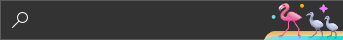
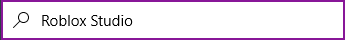
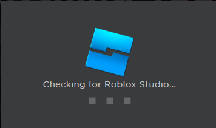
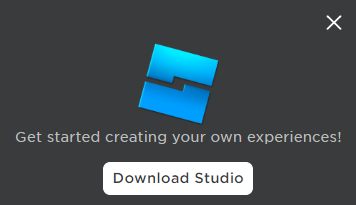
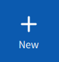
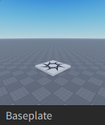

To check if you have roblox studio installed, go to your search bar down at the taskbar:
And type in: "Roblox Studio"
If there is nothing called Roblox Studio, follow these steps. If there is, go to the Getting Started section
So, you wanna go to web.roblox.com/create Go to page and click "Start Creating" or, click hereDownload Roblox Studio to download Roblox Studio
Now, once you have clicked it you will see a section that says: "Checking For Roblox Studio"
Then wait a little bit and its gonna say "Get started creating your own experiences!"
Now click the Download Studio button and open the downloaded file, that will install roblox studio
If roblox studio is installed, go to the following Getting Started section
To create a normal baseplate, what you want to do, is click the new button on the left side of your screen, and click baseplate


Now that you are in your first ever game (or you already had one before and your just following this course), choose between:
| Type |
|---|
| |
| |